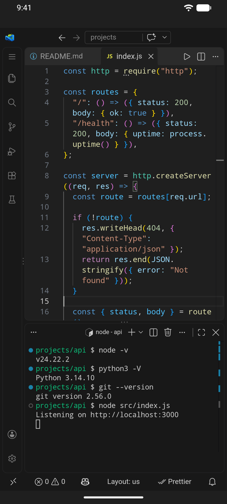
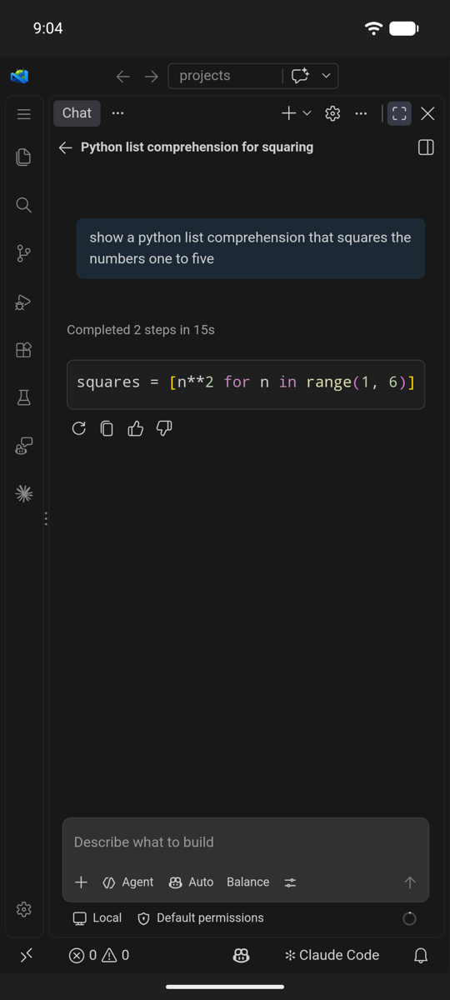
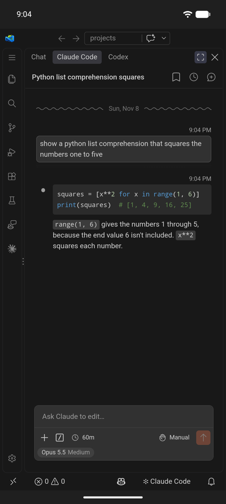
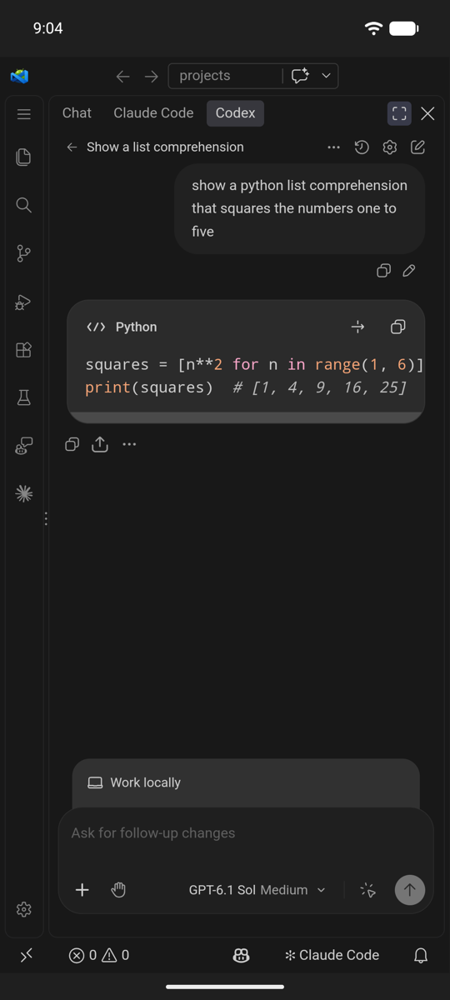
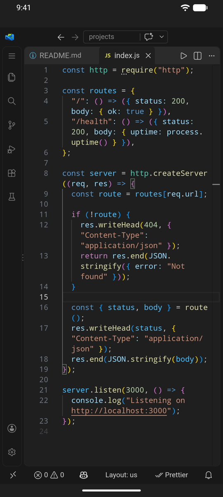
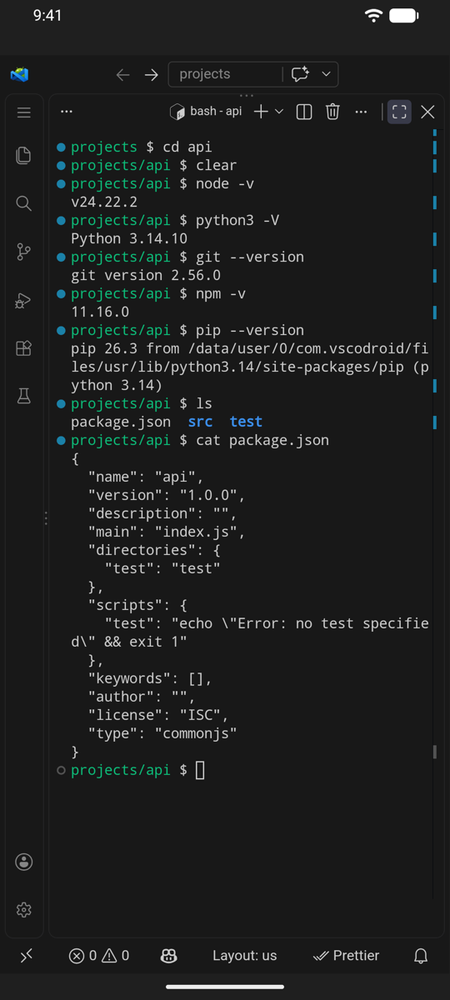
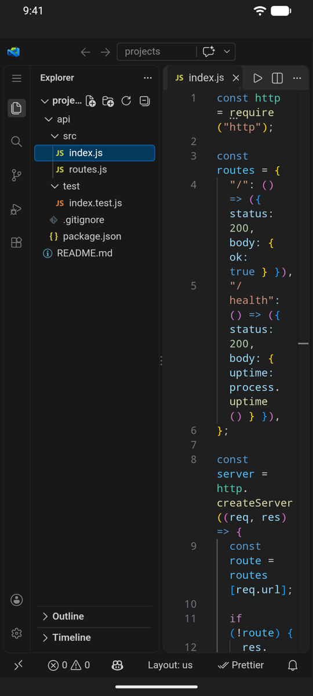
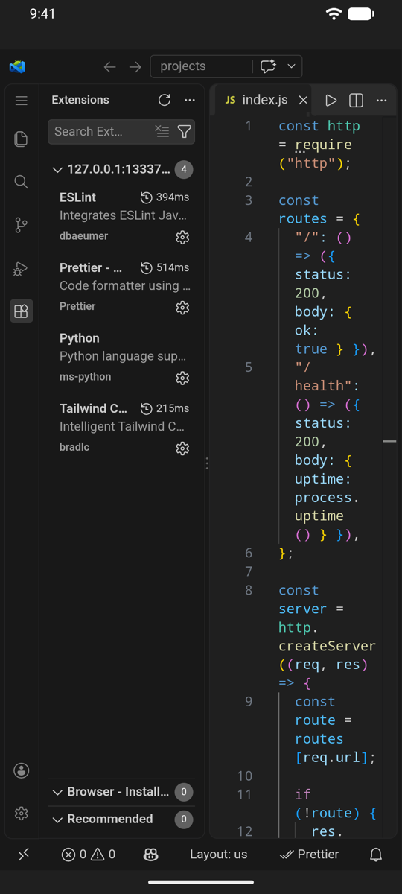

Latest release What's new
VS Code, on your phone
Not an editor inspired by it. The real workbench, with a real terminal, running natively on Android.

- The VS Code workbench built from Code - OSS
- Bash on a proper PTY not a shell emulator
- Node.js, Python and Git bundled, no setup
- Extensions from Open VSX
- Android
- 10 or newer, 64-bit
- First launch
- Around 800 MB free
- Offline
- Editing, terminal and runtimes
- Telemetry
- None collected
01 / Assistants
AI assistants in the editor
Chat with GitHub Copilot, Claude Code or Codex from the side bar. Each one signs in with your own account, and each is a cloud service, so it needs a connection.
GitHub Copilot Chat is built in. Claude Code and Codex are extensions you add from the extensions view, and Codex also needs its toolchain, added from the toolchains screen. What you ask goes to the provider, under its own terms; the privacy policy has the details.
-

GitHub Copilot Chat Built in -

Claude Code Extension -

Codex Extension and toolchain
02 / In the box
Everything needed to work is bundled
There is no setup step, no Termux to install first, and nothing to configure before the first file opens.
Shell and tools
- Bash
- Git
- make
- ripgrep
- tmux
- OpenSSH
Bash on a proper PTY, with the rest already on the path. Not a shell emulator over a socket.
Runtimes
- Node 24
- npm
- Python 3
- pip
Node.js with npm and Python with pip, installed on first launch.
On demand
- Ruby
- Java 25
- C/C++
Installed when you ask for them.
-
The VS Code workbench
Built from the MIT-licensed Code - OSS source, so the editor, the command palette, settings and keybindings are the ones you already know.
-
Extensions from Open VSX
Browse and install from the extensions view as usual. Extensions written in JavaScript work; the few that ship a desktop Linux binary do not.
-
Your own files
Work in the app's own project directory, or open a folder from device storage: the app keeps a working copy and writes your changes back to the original. Both are ordinary folders to the editor.
-
Offline once installed
Editing, the terminal and the bundled runtimes work with the network off. Extension checks and updates, language toolchain downloads and package managers need a connection. The editor collects no telemetry.
03 / First run
Getting started
Four steps, and only the unpacking and the language downloads take any waiting.
-
Install
From Google Play, or by sideloading the APK from GitHub Releases. Both are the same build.
-
Let it unpack
The first launch extracts the editor and the bundled tools behind a progress bar, and it needs the space before it starts rather than partway through. It repeats after each app update, though an update needs far less room because what is already unpacked counts toward it.
-
Pick your languages
Ruby, Java 25 and C/C++ are offered until you answer, and can be added or removed later from the app icon's long-press menu.
-
Open a folder and work
Use the app's projects directory, or open a folder from device storage. The terminal starts where the editor is.
04 / Screens
A look around
The app itself at phone size, not mockups.
-

The editor -

The terminal -

The explorer -

Extensions
05 / Limits
Worth knowing before you start
Android is not a desktop, and a few things follow from that. The user guide covers each in full.
-
No C compiler until you add one
Packages that build native code at install time fail until the C/C++ toolchain is added from the toolchains screen. With it, pip compiles a package's C extension; node-gyp builds have not been tried, so a pure JavaScript alternative is the reliable route. Pure JavaScript and pure Python packages are fine, and pip is pointed at prebuilt Android builds of NumPy, pandas, pydantic-core, psutil and cryptography, so those install without it.
-
Tools start indirectly
Android refuses to execute files in an app's private storage. Ruby and Java commands use launchers on PATH, including extension spawns and process tasks. C/C++ works in a terminal or a shell task. An extension that starts the compiler by its full path, without a shell, gets the same loader, but that has not been tried.
npmandnpxhave shell functions and PATH launchers. For pip outside a shell, usepython3 -m pip. -
Some extensions cannot work
An extension that ships a compiled desktop Linux binary installs without complaint and then does nothing. The JavaScript ones are the overwhelming majority.
Download, open, code
From Google Play, or by sideloading the APK from GitHub Releases. Both are the same build.